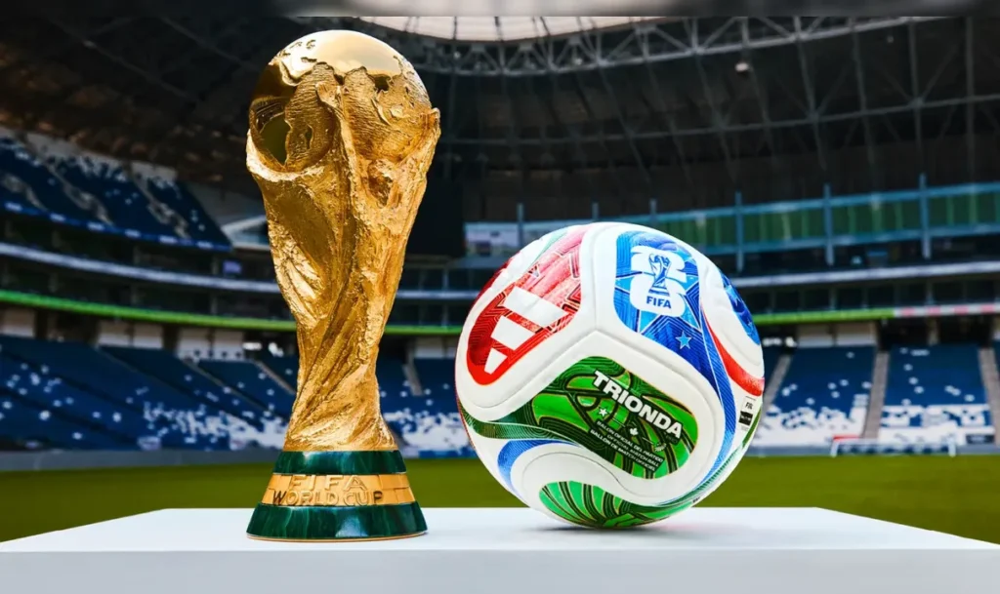

Modalidade esportiva
Futebol
Jogos com bola praticados com os pés existem há muitos séculos. O futebol moderno foi organizado na Inglaterra: em 1863, clubes criaram a Football Association e estabeleceram regras comuns para a modalidade.

Modalidade esportiva
Jogos com bola praticados com os pés existem há muitos séculos. O futebol moderno foi organizado na Inglaterra: em 1863, clubes criaram a Football Association e estabeleceram regras comuns para a modalidade.